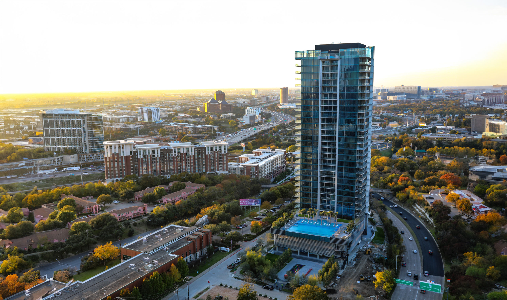

Rising 114 metres above Harwood Village, Tour Bleu Ciel stacks 158 high-specification residences across 32 floors and wraps them in 7,500 m² of planted, outdoor terraces. The tower brings a European language of setbacks and loggias to a Texas skyline defined by sealed glass curtain walls.
Nicolas worked on the tower as a senior designer in the Paris studio, with lead input on façade modulation, unit mix studies and the design of the planted terraces as architectural — not merely landscape — elements cascading down the building's south face.
At street level, the building contributes retail and activated pedestrian frontage to the Harwood District's walkable urbanism — a considered transition from the residential tower above to the neighbourhood below.